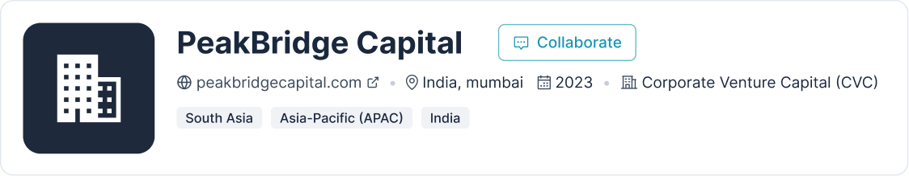
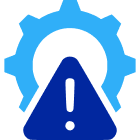

WeFundCo for startups
Be ready for capital,
not just visible to it.
Understand how investors will see your business, before the conversation starts.
Join the waitlist to get early access when WeFundCo launches.

Benefits
What’s in it for you?
- Discover relevant investors, capital pathways and ecosystem opportunities.
- Assess investment readiness through structured business and financial intelligence.
- Prepare through valuation insights, documentation readiness and investor positioning.
- De-risk through verification, risk assessment and AI-assisted diligence.
- Connect with investors, strategic partners and specialist advisors.
- Execute the funding journey through diligence, engagement and transaction support.
The WeFundCo journey
A clearer path from
idea to investment.
-
Discover
Get matched with relevant investors through structured profiles, not cold outreach.
-
Evaluate
Your company information is organised into a clear, investor ready view.
-
Prepare
Identify readiness gaps before serious investor conversations begin.
-

De-risk
Valuation, financial analysis and AI assisted diligence highlight what needs attention.
-
Connect
Engage with investors who already understand your business and its readiness.
-
Transact
Move forward with human led discussions, specialist support and deal execution.
More than matching
Built to be your
investment intelligence layer.
From readiness to risk visibility, WeFundCo brings structure to every stage of your fundraising journey.
Frequently asked questions
What is WeFundCo?
WeFundCo is an investment readiness, intelligence and transaction platform that helps businesses prepare for capital and helps investors evaluate opportunities with greater clarity.
Who is WeFundCo for?
WeFundCo is built for founders and businesses at different stages of fundraising readiness, from early stage startups to growth stage companies.
How does WeFundCo help me get investment ready?
WeFundCo evaluates your business across financials, valuation, compliance, ownership and diligence readiness, and highlights the gaps to address before investor conversations begin.
Is this the same as pitching to investors directly?
No. WeFundCo focuses on preparation and evaluation first, so that when you connect with investors, you walk in with a stronger and more structured case.
What is AI assisted diligence, and does it replace professional diligence?
AI assisted diligence surfaces key considerations early in your journey. It does not replace formal legal, financial or tax diligence, which remains the responsibility of qualified professionals.
When can I join WeFundCo?
WeFundCo is currently in its early access phase. Join the waitlist to be notified as soon as the platform goes live.
Get investment ready.
Preparation changes how investors see your business.
Join the waitlist and be first to know when WeFundCo launches.